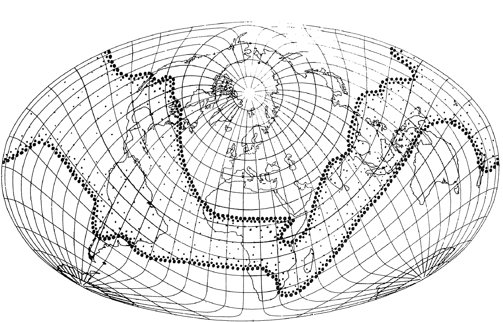
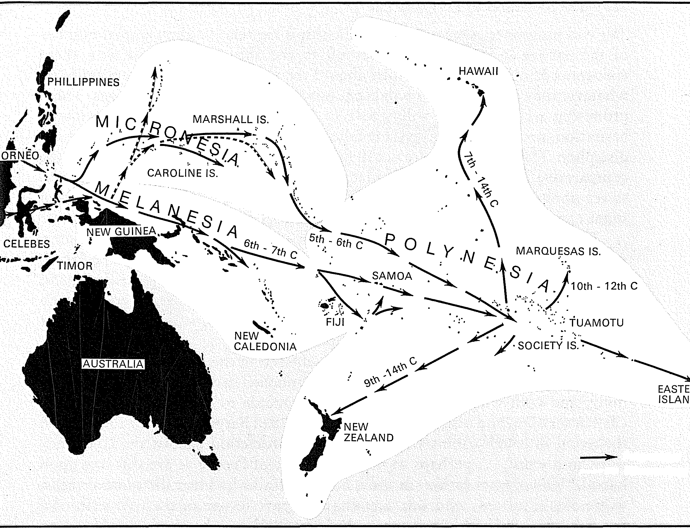

Bütünü itibariyle, egemen bitkiler ne kadar önemli olurlarsa olsunlar, dünyanın ancak dar bir mekânını sahiplenebilmektedirler, bu, tam da yoğun nüfus alanlarının, tamamlanmış veya tamamlanma yolunda olan uygarlıkların mekânıdır. Bunun dışındaki alanlarda, egemen bitkiler ifadesi bize yolumuzu şaşırtmamalıdır: bu bitkiler insan kitleleri tarafından benimsenmişse de, onların yaşam tarzlarına öylesine bir şekilde katılmışlardır ki, onlara biçim vermekte ve onları bazen tersine döndürülemez bir seçimin içine hapsetmektedirler; bunun tersi de aynı derecede geçerlidir: bu bitkilerin tarihini sağlayan ve sürdürenler uygarlıklardır. Buğday, pirinç, mısır, patates tarımları, kullanıcılarına göre dönüşmektedirler. Colombus öncesi Amerika beş veya altı cins patates bilmekteydi: bilimsel tarım bundan binlercesini yaratmıştır. İlkel kültürlerin mısırı ile bugünkü ABD'nin corn belt'i arasında hiçbir ortak nokta yoktur.
Kısacası bitkisel bir başarı olarak gördüğümüz şey, aynı anda ve geniş ölçekte bir kültürel başarıdır. Böylesine bir başarının kendini kanıtlayabilmesi için, her seferinde, başarının taşıyıcısı olan toplumun “çevreleme teknikleri”nin aracılık etmesi gerekmiştir. Eğer manyoktan egemen bitki sıfatını esirgiyorsak, bunun nedeni cassave’ın (kesilip yıkanan, kurutulan ve ufalanan manyok kökünden elde edilen un) düşük bir gıda olması değildir. Bunun tamamen tersine, bugün bu gıda birçok Afrika ülkesinde açlığa karşı bir kaledir. Fakat ilkel kültürler tarafından ele geçirildiği için, sonradan onlardan kurtulamamıştır; Afrika'da olduğu kadar, Amerika'da da yerlilerin gıdası olarak kalmış ve mısır veya patatesinki gibi bir toplumsal yükselme yaşamamıştır. Kökünü bulduğu topraklarda bile, Avrupa'dan ithal edilen tahılların rekabetine uğramıştır. Bitkiler de insanlar gibi, ancak koşulların yardımıyla başarıya ulaşabilmektedirler. Bu özel durumda ihanet eden tarihtir. Manyok ve tropikal ülke yumruları, mısır -belli bir mısır kültürü- ve tanrının lütfu meyva ağaçları -muz, ekmek ağacı, Hindistan cevizi, palmiye- pirinç veya buğday insanlarından daha az ayrıcalıklı insan gruplarının hizmetinde olmuşlardır, fakat bu gruplar inatla çok geniş mekânları işgâl etmektedirler; kısaltmak için bunlara çapalı insanlar diyeceğiz.
Bugün bile çarpıcı olan, ya delik açıcı sopa (ilkel bir çapa biçimi) ya da çapa ile işlenen toprakların muazzamlığıdır. Bu topraklar tıpkı bir halka, Alman coğrafyacıların dedikleri üzere bir “kuşak" gibi dünyayı çepeçevre kuşatmakta ve Okyanusya, Colombus öncesi Amerika, Kara Afrika, Güney ve Güneydoğu Asya'nın bir kısmını (burada onların yaşam alanları tarla sürenlerinkine değmekte, bazen de içinden geçmektedir) kapsamaktadır. Özellikle Güneydoğu Asya'da (geniş anlamda Hindiçini) bu iki tarım biçiminin birbirine karışımı söz konusudur.
1° Dünyanın bugüne ait bu çehresinin çok eski olduğunu ve bu kitabın tüm zamansal kalınlığı için geçerli olduğunu; 2° kaçınılmaz yerel çeşitliliklerin ötesinde, dikkat çekici derecede türdeş bir insanlığın söz konusu olduğunu; 3° fakat doğal olduğu üzere, bu insanlığın yüzyıllar geçtikçe kendini dış aşılardan daha az koruyabildiğini, iyice belirleyelim.
1. Eski bir çizgi - Aslında eğer bu konuda hâlâ tartışmakta olan tarihöncesi araştırmacıları ile etnologlara inanacak olursak, çapa tarımı çok eski bir tarımsal devrimden, M.Ö. IV. binde koşum hayvanlarıyla tarıma olanak vermiş olanından önceki devrimden kaynaklanmaktadır. Belki bu devrim V. bine kadar geri gidip, tarihi önceleyen karanlığın içinde kaybolmakta ve diğer devrim gibi, herhalde o da Mezopotamya'dan doğmaktadır. Her halükârda, çağların en derininden gelen ve öğrenilen derslerin tekrarı sayesinde süren bir deney söz konusudur.

ÇAPALI KÜLTÜRLER “KUŞAĞI”
Amerika kıtası ve Pasifik adaları boyunca yer alan kesimin özellikle kalın olması dikkat çekicidir (E. Werth'e göre). Hubert Deschamps'a göre (7.1.1970 tarihli mektup), Werth Madagaskar'ı çapa alanına katarken yanılıyor. Bu adada, muhtemelen Endonezya kökenli, çok uzun bir bel kullanılmaktadır (angady).
Bizim bakış açımızdan tarımın sabanla yapılıyor olup olmamasının önemi yoktur, çünkü böylesine bir tartışma bir araç determinizmini ayrıcalıklı kılmaktadır. Ester Boserup, özgün bir kitapta (1966), yukarıda tasvir ettiğimiz ladang tipi sistemde, eğer tarım aşırı sınırlı bir alana çarparsa, besleyecek boğaz sayısındaki her artışın, ormanın kendini yeniden oluşturmasına tahsis edilen nadas zamanının azalmasına yol açacağını açıklamaktadır. Demek ki alet bu açıklamada artık neden değil, sonuçtur. Küllerin ve yangından kömürleşmiş (tekrarlayalım, köklerini sökmeksizin) ağaçların arasına serperek tohum atmak, tohumu toprağa sokmak veya bir filiz dikmek söz konusu olduğunda, çukur açan sopa yetmekte, hatta bu bile gerekmemektedir. Fakat eğer nadas -orman ekinlerin dönüş hızı yüzünden yeniden oluşmazsa, onun yerine ot yetişecektir, onu yakmak yeterli olmamaktadır, çünkü ateş kökleri yok etmemektedir. Bu durumda çapa, otları temizlemek üzere zorunlu hale gelmektedir: bu durum hem orman yakılarak hem de çayır yakılarak tarım yapılan Kara Afrika'da iyice görülmektedir. Nihayet, açık ve her türlü ağaçtan arındırılmış geniş mekânlarda hasatların ritmi giderek artırıldığında ve bunun için toprağın sürekli olarak hazırlanması gerektiğinde, bel veya saban müdahale etmektedirler.
Bunun anlamı, çapalı köylülerimizin geciktikleri, henüz düşük olan bir nüfus baskısının onları maceralara ve koşumlu hayvan sürücülerinin baskıcı işlerine zorlamadığıdır. Romalı peder Giovanni Francesco (1648), Kongo köylülerinin yağmur mevsimindeki çalışmalarını seyrederken yanılmamıştır: “toprağı işleme biçimleri, toprağın yüksek verimliliği yüzünden fazla emek istememektedir (tabii ki bu nedeni kabul etmiyoruz); toprağı ne sürmekte ne de bellemekte, fakat bir çapayla biraz kazıyarak tohumu örtmektedirler. Bu hafif yorgunluğun karşılığında, yağmurun zamanında yağması koşuluyla, bol hasat almaktadırlar” diye yazmaktadır. Bundan varmamız gereken sonuç, çapa kullanan köylülerin emeğinin Avrupa köylüleri veya Asya'nın pirinç yetiştiricilerininkinden daha üretken olduğu, ama yoğun toplumlara izin vermediğidir. Bu ilkel çalışma şeklini ayrıcalıklı hale getiren toprak veya iklim olmayıp, kullanılabilir nadas alanlarının muazzamlığı (bizatihi nüfus azlığından ötürü) ve kırılması güç bir adetler ağı oluşturan toplum biçimleridir -Pierre Gourou bunlara “çevreleme teknikleri” adını vermektedir-.
2. Türdeş bir bütün - Çapa adamlarının insan grubu, en etkileyici ayrıntı olarak, oldukça türdeş bir mal, bitki, hayvan, alet bütününe tekabül etmektedir. Öylesine türdeş ki, adeta hiç hata kaygısı olmaksızın, çapalı köylünün nerede olursa olsun evinin tek katlı dikdörtgen biçimli olduğunu; kaba bir çanak-çömlek tekniğine sahip olduğunu, ilkel bir el dokuma tezgâhı kullandığını, fermante içkiler yaptığını ve tükettiğini (ama alkol yok), keçi, koyun, domuz, köpek, tavuk, bazen arı gibi küçük hayvanlar yetiştirdiğini (ama hiçbir büyük baş yoktur) önceden söyleyebiliriz. Gıdasını kendini çevreleyen, alışık olduğu bitkisel dünyadan sağlamaktadır: muz ağaçları, ekmek ağaçları, palmiye calebasso, taro, igname. Çarın hizmetindeki bir bahriyeli, 1824'te Tahiti'de ne keşfetmiştir? Ekmek ağaçları, hindistan cevizi ağaçları, muz plantasyonları ve “küçük igname ve tatlı patates tarlaları.”
Tabii ki bu çapalı ekinlerin büyük alanları arasında farklar kendilerini belli etmektedirler. Örneğin Afrika çayır ve steplerinde manda ve öküz gibi büyük başların varlığı, Habeş çiftçileri aracılığıyla buraya ulaşan eski bir yayılmadan kaynaklanıyor olmalıdır. Örneğin ezelden beri yetiştirilen (tohum değil de, çelikle çoğalıyor olması, yetiştirilmesinin eskiliğinin kanıtıdır) ve çapa alanlarının karakteristiği olan muz, Sudan ülkesinde, Nijer'in kuzeyindeki marjnal bölgelerde yetişmemektedir, gene macerası esnasında, fırtınalı kıyılarına atılan Polinezyalılar (Maoriler) için sert olan ikliminin onları şaşırttığı Yeni Zelanda da böyledir.
Fakat esas istisna Colombus öncesi Amerika'dır. Andların ve Meksika yaylalarının geç ve narin uygarlıklarının sorumluları olan çapalı köylüler, Amerika'ya Behring boğazı yoluyla erkenden, birçok dalgalar halinde gelen, Asya kökenli halkların içinden çıkmışlardır. Bugüne kadar bulunan bu eski insan izleri M.Ö. 48.000-46.000 yıllarına kadar geri gitmektedir. Fakat arkeolojik kazılar devam etmektedir ve bu tarih kıstası er veya geç tartışılacaktır. Tartışma dışı olana benzeyen, Amerikan insanının eskiliği, aşikâr Moğol karakteri ve Amerika kızılderililerinin başarılarını öncele- yen geçmişin, duyulmadık bir kalınlıkta olmasıdır. Avcılık ve balıkçılık, tarihöncesinin bu küçük gruplarının, bize göre birer sapma olan yer değiştirmelerini belirlemiştir. Kıtayı kuzeyden güneye katederek, M.Ö. VI. binde Ateş Toprağına varmışlardır. Yeni Dünya'nın diğer yerlerinde avlandığı için yüzyıllardan beri kaybolmuş olan atın, o tarihlerde bu “Finistere”de var olması merak uyandırıcı bir şey değil midir?
Amerikan kıtasının aşırı bol mekânı boyunca, kuzeyden gelen insanlar (bunlara muhtemelen Çin, Japon, fırtınaların Polinezya kıyılarından önlerine katarak sürüklediği teknelerdeki insanlar da katılmışlardır) grupçuklar halinde dağılmışlar ve soyutlanmışlıkları içinde kendilerine özgü hale gelerek, kendi kültürlerini ve birbirleriyle ilgisi olmayan yeni dillerini oluşturmuşlardır. Şaşırtıcı olan, bu dillerden bazılarının coğrafi olarak, başka yabancı dil mekânlarının içinde adacıklar halinde dağılmış olmalarıdır. Asya yönünden gelen mevcutların azlığı, her şeyin yerinde oluştuğunu anlamaya yardım etmektedir (uzak akrabalıkları hatırlatan birkaç kültürel çizgi hariç). Yeni gelenler, uzun bir süreç esnasında, bölgenin kaynaklarını kullanmışlar ve geliştirmişlerdir. Bir tarım ancak bir şekilde ortaya çıkarak manyok, tatlı patates ve özellikle, herhalde Meksika kökenli olan mısırdan işe başlamıştır; bu tarım çapa kullanımını anormal bir ölçekte, kıtanın kuzey ve güneyindeki ılıman bölgelere kadar, manyokun tropikal ve sıcak topraklar alanının iyice ötelerine kadar yaymıştır.
3. Yakın tarihlerde meydana gelen karışmalar - Ancak ilkel çapa dünyasında bile, kısa bir süre sonra, dünyanın deniz birliğinin kurulmasının yol açtığı yeni kaymalar ortaya çıkmış ve aşılamalar giderek çoğalmıştır. Örneğin Kongo'ya manyokun, tatlı patatesin, yer fıstığının, mısırın gelmesini işaret etmiştim: bunlar Portekiz ticaretine ve denizciliğine borçlu olunan iyiliklerdir. Fakat yeni gelenler, eski bitkilerin ortasında becerebildikleri gibi büyümektedirler: manyok ve mısır, suyla karıştırılıp bir cins polenta yapılmaya yarayan, beyaz veya kırmızı, çeşitli renklerdeki darının yanında yetişmektedir. Bu polenta kurutulduğunda, iki, üç gün dayanmaktadır. “Ekmek olarak iş görmekte ve sağlığa hiçbir zararı olmamaktadır.” Gene Portekizliler tarafından geliştirilmiş olan sebzeler -lahana, kabak, marul, maydanoz, hindiba- yerli baklagillerin yanında pek başarılı olamamışlar, ama kaybolmamışlardır.
En özgün çerçeve, Afrika'nın besleyici ağaçlarının meydana getirdiği olarak kalmaya devam etmektedir: kola ağaçlan, muz, daha da fazlası palmiye, bu ağaç çok çeşitli olup yağ, şarap, sirke, dokuma iplikleri, yapraklar... sağlamaktadır. “Her yerde palmiyenin bağışları görülmektedir: evlerin çit ve çatılarında, av tuzaklan ve balıkçı sepetlerinde, kamu hazinesinde (kumaş Kongo'da para olarak kullanılmaktaydı), giyimde, kozmetikte, ilaçta, beslenmede...” “Palmiyeler simgesel alanda erkek ağaçlardır ve bir anlamda da soyludurlar.”
Kısacası, ilkel ama canlı bir tarıma yaslanan bu halkların ve bu toplumların değerini olduğundan az biçmeyelim. XIII. yüzyıldan itibaren Havai'den Paskalya adasına ve Yeni Zelanda'ya kadar olan muazzam bir üçgen alanı işgal eden Polinezyalıların yayılmasını düşünelim: bu basit bir başarı değildir. Fakat uygarlıklara mensup insanlar onları, kendi arkalarında ikinci dereceye atmışlardır. Onların başarılarını ikinci dereceye almışlardır. Onların başarılarını silmiş, değersizleştirmişlerdir.

XIV. YÜZYIL ÖNCESİNDE MELANEZYALI VE POLİNEZYALI GÖÇLERİ
Polinezya deniz seferlerinin, Havai adalarından, Paskalya adası ve Yeni Zelanda'ya kadar olan üçgeninin büyüklüğü dikkat çekicidir.
Çapalı insanlar kategorilerimizin en alt basamağında yer almamaktadırlar. Onların bitkileri, aletleri, ekinleri, evleri, denizcilikleri, hayvancılıkları, başarıları hiç de ihmal edilemeyecek bir kültürel düzeyi işaret etmektedirler. Son basamakta, geçimliklerini tarım olmadan sağlayan, toplayıcılık, avcılık ve balıkçılıkla geçinen insan grupları bulunmaktadır. Bu “avcılar” W. Gordon Hewes'un 1 numaradan 27 numaraya kadar çok yaygın olan kutularını işgal etmektedirler. Onlara muazzam mekânlar düşmektedir, fakat bu alanı kullanmada ormanlar, bataklıklar, azgın nehirler, vahşi hayvanlar, binlerce kuş çeşidi, buzlar, kötü havalar onlara engel çıkartmaktadır. Kendilerini çevreleyen doğaya egemen değillerdir; üstelik bu engel ve zorlamaların arasında kalmaktadırlar. Bu insanlar tarihin sıfır düzeyindedirler; hatta doğru olmayan bir şekilde, tarihsiz oldukları da söylenmiştir.
Ancak onlara, XV.-XVIII. yüzyıllar arasındaki dünyada “senkronik” bir bakış içinde yer vermek uygun olacaktır. Aksi takdirde, kategorilere dayalı ve açıklamalı yelpazemiz tam anlamıyla açılamayacak ve anlamını kaybedecektir. Fakat tarihçi olarak onları, örneğin Fransız köylülerini veya Sibirya'daki Rus göçmenlerini gördüğümüz gibi görmek güçtür. Dünkü etnografların, onları yaşarken görüp, varoluşlarının mekanizmalarını anlamaya uğraşmış olan gözlemcilerin sağladıklarının dışında, tüm verilerden mahrumuz. Fakat dünün bu kâşif ve seyyahlarının hepsi de Avrupa'dan çıkma olup, görülmedik veya çarpıcı imgeleri avlama peşinde olduklarından, kendi deney ve bakış tarzlarını çoğu zaman başkalarına yansıtmış değiller midir? Bunlar kıyaslama ve zıtlıklardan hareketle yargıya varmaktadırlar. Üstelik bu tartışmalı imgeler, eksik ve çok nadirdir. Ve onları izlemek, âdeta taş çağında yaşayan hakiki ilkeller mi yoksa “vahşiler”e yoğun toplumların “uygarları”na olduğu kadar uzak olan, biraz önce sözünü ettiğimiz çapalı insanların mı, asıl olarak söz konusu olduğunu bilebilmek her zaman kolay değildir. İspanyolların başına çok çorap ören Kuzey Meksika'nın Çiçimek kızılderilileri, daha Cortes'in gelmesinden önce, Aztek yerleşiklerinin düşmanıydılar.
Magellan'dan Tasman'a, Bougainville'e ve Cook'a kadar, dünya çevresinde yapılan ünlü yolculukların günlüklerini okumak, denizin, özellikle de tek başına dünyamızın yüzeyinin yarısını meydana getiren Güney denizinin monoton ve sınırsız çöllerinde kaybolmak demektir. Bu okuma her şeyden önce, denizcilerin kendi kaygılarından, enlemlerden, gemideki erzaktan, sudan, yelkenlerin, dümenin durumundan, mürettebatın hastalıklarından, özellikle de keyif durumundan söz etmelerini dinlemek demektir. Rastlamaların ve demir atmaların rastlantısı içinde şöyle bir fark edilen topraklar, bazen keşfedildikleri veya tanındıkları anda kaybedilmektedirler. Bunlara ilişkin tasvirler belirsizdir.
1605'te Portekizliler tarafından keşfedilen, 1767'de İngiliz Samuel Walis tarafından yeniden keşfedilen ve Bougainville'in ertesi yıl, 6 Nisan 1768'de yanaştığı, Pasifi- ğin ortasındaki cennet Tahiti adasının durumu böyle değildir; James Cook âdeta günü gününe bir yıl sonra, 13 Nisan 1769'da adaya çıkmış ve onunla birlikte, “Pasifik efsanesi”nin ilk üssü olan adanın ünü ortaya çıkmıştır. Fakat acaba tasvir ettikleri vahşiler ilkeller miydi? Bunun uzağındaydılar. “Farklı büyüklüklerde ve hepsi de terazili (salıncaklı) yüzden fazla pirog (Bougainville'in) teknelerinin (adanın önünde demir atmadan önce) etrafını çevirmişlerdir. Bunlar hindistan cevizi, muz ve ülkenin diğer meyvalarıyla yüklüydüler. Bu lezzetli meyvaların ıvır zıvırla takas edilmesi bizim için iyi oldu.” Cook Endeavour’la geldiğinde de aynı sahne: seyir defterinde “demir atmıştık ki, yerliler kalabalık bir halde gemimize geldiler, kayıkları hindistan cevizi ve diğer meyvalarla doluydu” diye yazılıydı. Küpeştelerin üstüne, tıpkı maymun gibi büyük bir istekle tırmanıyorlar, onu bunu çalıyor, ama barışçıl takasları kabul ediyorlardı.” Bu iyiye yorulacak kabuller, bu takaslar, tereddütsüz girişilen bu pazarlıklar, daha bu kadarıyla bile yerli yerinde olan bir kültürün, toplumsal bir disiplinin kanıtıdırlar. Gerçekten de Tahitililer, meyva ve yabani bitkilerin bolluğuna rağmen, “ilkel” değillerdir; kabak ve tatlı patates (herhalde Portekizliler getirdi), igname ve pişirmeden yedikleri şeker kamışı yetiştirmekte; bol miktarda domuz ve kümes hayvanı beslemektedirler.
Endeavour gerçek ilkellere daha sonra, Magellan boğazında veya Horn burnu yolunda mola verdiğinde, belki Yeni Zelanda'nın Güney Adası'nın kıyılarında durduğunda, su, odun sağlamak ve tekneyi karina etmek için Avustralya sahillerinde demir attığında kesinlikle rastlayacaktır. Sonuç olarak, dünya haritasında resmolan çapa uygarlıkları kuşağının dışına çıktığı her seferinde.
Böyle durumlarda, Cook ve adamları Güney Amerika'nın güney ucundaki Maire boğazında, her şeyden yoksun olan ve gerçek hiçbir temas sağlayamadıkları bir avuç sefil vahşiyi fark etmişlerdir. Fok derileri giymiş olan; zıpkın, yay ve oklardan başka araçları olmayan, soğuktan iyi korumayan kulübelerle yetinen bu insanlar “belki de tek kelimeyle, bugün dünya üzerinde var olanların en sefilleridir.” İki yıl sonra, 1767'de Saumel Walis bu aynı yoksul vahşilere rastlamıştır. “Oltayla balık tutan (tayfalarımızdan) biri, bu Amerikalılardan birine, yakaladığı ve ringa kadar iri olan, henüz canlı olan bir balık verdi, Amerikalı onu kemik verilen bir köpek açlığıyla aldı; balığı önce işitme organının yanını ısırarak öldürdü, sonra kafadan başlayıp kuyruğa kadar, ne kılçığını ne yüzgeçlerini ne pullarını ne de iç organlarını atmadan yemeye başladı.”
Cook ve arkadaşlarının boş zamanlarında gözledikleri şu Avustralyalı ilkeller de henüz vahşidirler. Onları hiçbir şeyleri olmayan, göçebe, biraz avlanan, bundan daha fazla olmak üzere, deniz alçaldığında çamurlu zeminde balık yakalayan insanlar olarak görmüşlerdir. “Ülkelerinde asla bir parmak bile işlenmiş toprak görmedik.”
Kuzey yarımküresinde de toprakların iç taraflarında bu örneklerden daha fazlasını ve hiç de daha az temsili olmayanlarını keşfedebiliriz. İleride döneceğimiz Sibirya, günümüze kadar emsalsiz bir etnografya müzesi olarak kalmıştır.
Fakat ayrıcalıklı gözlem alanı hâlâ Kuzey Amerika'nın kalın gövdesi değil midir? Burada tahripkâr ve aydınlatıcı Avrupa kolonizasyonu inat etmektedir. Bu konuda, bir ilk bütünsel bakış için, başrahip Prevost'nun “Amerika hakkında genel gözlemlerinden daha fikir verici olanını bilmiyorum. Çünkü başrahip Prevost, peder Charlevoix'nin eserini, Champlain'in, Lescarbot'nun, La Hontan'ın ve Potherie'nin gözlemlerini karmakarışık özetlediği ölçüde, Louisiana'dan Hudson körfezine uzanan ölçüsüz bir mekânda, kızılderililerin farklı gruplar halinde özgünleştiklerini gösteren bir tabloyu ortaya çıkartmıştır. Bunların arasında, bayramlarda, inançlarda, bu “vahşi milletlerin” sonsuz derecede çeşitli adetlerinde ifadesini bulan “mutlak farklar” vardır. Bizi ilgilendiren, onların yamyam olup olmamaları değil de, toprağı işleyip işlemedikleridir. Bize mısır veya başka bitkiler işleyen ve zaten bu işi kanlarına bırakan köylülerin gösterildiği her seferinde, çapayı veya yerli diyebileceğimiz basit bir sopayı veya uzun bir beli fark ediyoruz; bize mısırın benimsenmesi konusunda farklı yerli yöntemlerinin tasvir edildiği her seferinde veya Louisiana'daki patates ekiminin benimsenmesinin veya hatta batıya doğru “çılgın yulaf” yetiştiren şu kızılderililerin tasvir edildiği her seferinde, ne kadar kaba olurlarsa olsunlar köylülerin, yerleşiklerin veya yarı-yerleşiklerin karşısındayız demektir. Ve bu köylülerin, bize göre, avcı veya balıkçı kızılderililerle hiçbir benzerlikleri yoktur. Zaten bunlar giderek daha az balıkçılık yapmaktadırlar, çünkü Avrupalıların sızması onları pek de üstüne düşmedikleri halde sistematik hale gelen bir şekilde, Atlantiğin ve Doğu'nun balıklı kıyılarından uzaklaştırmıştı^ daha sonra av alanlarında da kötü muamele göreceklerdir. Balina zıpkınlamak olan ilk mesleklerini bırakan Basklar “onun kadar harcama ve yorgunluk gerektirdiği halde, daha fazla kâr getiren” kürk ticaretine oldukça çabuk geçmiş değiller midir? Halbuki balinaların henüz Saint-Laurent nehrinde “bazen kalabalık olarak” yukarı çıktıkları dönemdir! İşte kızılderili avcılar, Hudson körfezindeki kaleler veya Saint-Laurent piyasası tarafından manipüle edilen kürk tüccarları tarafından izlenmekte ve hayvanları gafil avlamak için fakir göçebe köylerinin yerini değiştirmektedirler. “Kar üzerinde” tuzakla veya boyundurukla “yakalanan bu hayvanlar, karaca, kedi, geyik, sansar, ermin, lutr, kastor ve tavşandır.” İşte Avrupa kapitalizmi Amerika'nın muazzam deri ve kürk kitlesini böyle ele geçirmiştir ve bir süre sonra uzak Sibirya ormanlarının avcıları, Amerika kürkleriyle rekabete gireceklerdir.
İnsan macerasının binlerce yıl boyunca, başlangıçları ve ayak sürümeleri itibariyle tek olduğu ve senkroni ile diyakroninin birbirleriyle kesiştikleri konusunda ikna olmak için bu imgeleri artırabiliriz. “Tarımsal devrim” yalnızca M.Ö. VII. veya VI- II. bindeki Ortadoğu gibi birkaç ayrıcalıklı ocakta gerçekleşmedi. Yayılması gerekti ve ileriye doğru yürüyüşü tek bir kerede olmanın uzağında kaldı. Deneyler aynı nihayetsiz güzergâhta yer almaktadırlar, ama yüzyıllık farklarla. Bugünün dünyası tüm çapalı insanları ortadan kaldıramamıştır. Ve birkaç ilkel, onlara sığınak görevi gören, konuk-sevmeyen topraklar tarafından korunmuş olarak şurada burada yaşamaktadır.